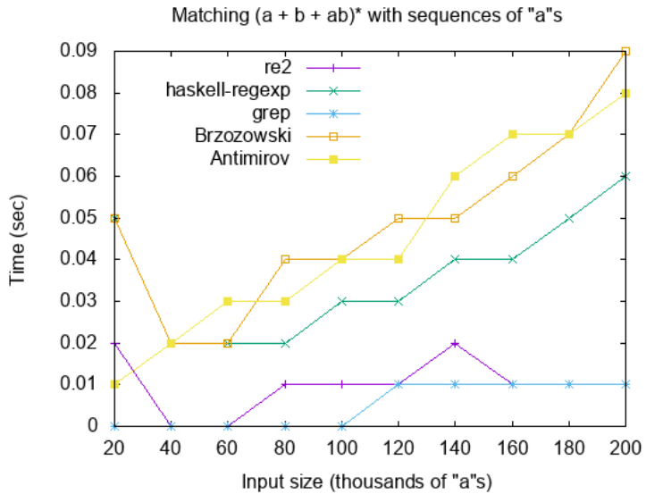
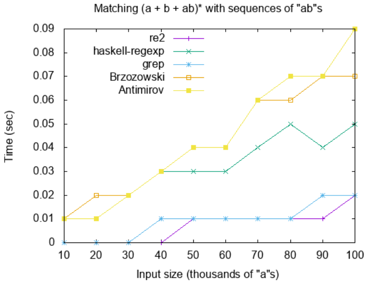

LiVES Research Group
2020
Parsing: analisar se cadeias de símbolos correspondem a um conjunto de regra
Interesse em Linguagens Regulares (LRs)
Formalizar completamente um algoritmo de parsing de LRs usando derivadas
Descrever, uma ferramenta de busca baseada em REs usando Agda
Linguagens reconhecidas por um Automâto Finito (Não-)Determinístico
\[e := \varnothing \; | \; \epsilon \; | \; a \; | \; e\:e \; | \; e+e \; | \; e^*\]
ν[_] : ∀ (e:Regex) → Dec ([] ∈ 〚e〛)
ν[ ∅ ] = no(λ())
ν[ ε ] =yes ε
ν[ $ x] =no(λ())
ν[ e•e′ ] with ν[e] | ν[e′]
...| yes pr | (yes pr1) = yes (pr • pr1 ⇒ refl)
...| yes pr | (no ¬pr1) = no (¬pr1 ◦ π2 ◦ •invert)
...| no ¬pr | pr1 = no (¬pr ◦ π1 ◦ •invert)
ν[e+e′] with ν[e] | ν[e′]
...| yes pr | pr1 = yes (e′ + L pr)
...| no ¬pr | (yes pr1) = yes (e + R pr1)
...| no ¬pr | (no ¬pr1)
= no([¬pr, ¬pr1] ◦ +invert)
ν[e*] = yes (( e • e * + L ε) *)\[ \begin{equation*} \begin{aligned} e + \varnothing &\approx e \\ e \: \varnothing &\approx \varnothing \\ \varnothing \: e &\approx \varnothing \\ \varnothing^* &\approx \epsilon \\ \end{aligned} \qquad \begin{aligned} \varnothing + e &\approx e \\ e \: \epsilon &\approx e \\ \epsilon \: e &\approx e \\ \epsilon^* &\approx \epsilon \end{aligned} \end{equation*} \]
\[ \begin{equation*} \begin{aligned} \partial_a(\varnothing) &= \varnothing\\ \partial_a(\epsilon) &= \varnothing\\ \partial_a(b) &= \epsilon \text{ se } b \equiv a, \text{ senao } \varnothing\\ \partial_a(e \: e') &= \partial_a(e) \: e' + \nu(e) \: \partial_a(e')\\ \partial_a(e+e) &= \partial_a(e) + \partial_a(e')\\ \partial_a(e^*) &= \partial_a(e) \: e^* \end{aligned} \end{equation*} \]
∂[_,_] : Regex → Char → Regex
∂[ ∅ , c ] = ∅
∂[ ε , c ] = ∅
∂[ $ c , c′ ] with c ?= c′
...| yes refl = ε
...| no prf = ∅
∂[ e • e′, c ] with ν[e]
...| yes pr = (∂[ e , c ] ‘• e′) ‘+ ∂[ e′ , c ]
...| no ¬pr = ∂[ e , c ] ‘• e′
∂[ e + e′, c ] = ∂[ e , c ] ‘+ ∂[ e′ , c ]
∂[ e* , c ] = ∂[ e , c ] ‘• (e ‘*)\[ \begin{equation*} \begin{aligned} \nabla_a(\varnothing) &= \varnothing\\ \nabla_a(\epsilon) &= \varnothing\\ \nabla_a(b) &= {\epsilon} \text{ se } b \equiv a, \text{ senao } \varnothing \\ \nabla_a(e\:e') &= \nabla_a(e) \odot e' \cup \nabla_a(e') \text{ se } \nu(e) \equiv \epsilon, \text{ senao } \nabla_a(e) \odot e'\\ \nabla_a(e+e') &= \nabla_a(e) \cup \nabla_a(e')\\ \nabla_a(e^*) &= \nabla(e) \odot e^* \end{aligned} \end{equation*} \]
∇[_,_] : Regex → Char → Regexes
∇[ ∅ , c ] = []
∇[ ε , c ] = []
∇[ $ x , c ] with x ?= c
...| yes refl = [ ε ]
...| no p = []
∇[ e • e′ , c ] with ν[e]
...| yes p = (e′ ⊙ ∇[ e , c ]) ++ ∇[ e′ , c ]
...| no ¬p = e′ ⊙ ∇[ e , c ]
∇[ e + e′ , c ] = ∇[ e , c ] ++ ∇[ e′ , c ]
∇[ e* , c ] = (e*) ⊙ ∇[ e , c ]\[ \begin{equation*} \begin{aligned} \widehat{\partial}_\epsilon(e) &= e \\ \widehat{\partial}_{as}(e) &= \widehat{\partial}_s(\partial_a(e)) \end{aligned} \end{equation*} \]
grep "ER" ./Regex.md
- Um algoritmo para computar a derivada de uma ER
- Depende da função $\nu$ que verifica se a ER aceita $\epsilon$
- Um algoritmo para identificar ERs equivalentes a menos de $\epsilon$ e $\varnothing$
- Algoritmo para obter a derivada da ER $e$ em relação à $a$, representado por $\partial_a(e)$
- AFN ao invés de AFD: conjunto de ERs que aceitam as palavrasa usando a ER \((a + b + ab)^*\)
ab
